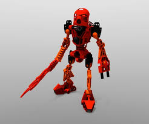
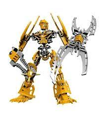

Lego Bionicle was Lego next line of conscrutable actifigure or constraction for short. Realease in 2001 and test in some markets even before then. As the people saw this new Lego it became a instant clasic. This theam ran for ten years. This set was also the first lego theam that had a story, with its comics being one of the most popular and wide spread during its time. With each year that came out we will learn more about the world we didnt even know we wanted.
 